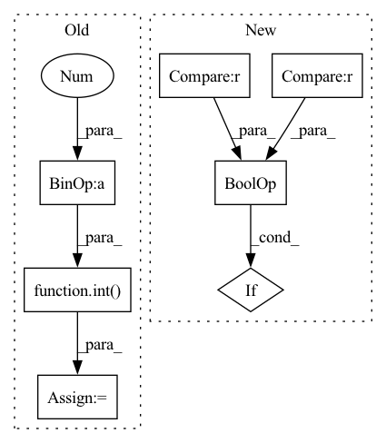

Pattern ID :1347
Before Change
annotations.append(Label(label=label))
item_id = item_id[len(item_id.split("/")[0]) + 1:]
bbox_count = lines[image_id + 1 ]
bbox_lines = lines[image_id + 2 : image_id + int( bbox_count) + 2]
for bbox in bbox_lines:
bbox_list = bbox.split()
if 4 <= len(bbox_list):After Change
lines = f.readlines()
line_ids = [line_idx for line_idx, line in enumerate(lines)
if ("/" in line or "\\" in line) and "." in line ] \
// a heuristic for paths
for line_idx in line_ids:In pattern: SUPERPATTERN
Frequency: 3
Non-data size: 7
Instances Fragment ID: 6500787
Project Name: openvinotoolkit/datumaro
Commit Name: 22728f23e850b31562cdb5da80cd34722a091574
Time: 2021-03-19
Author: maxim.zhiltsov@intel.com
File Name: datumaro/plugins/widerface_format.py
M Class Name: WiderFaceExtractor
N Class Name: WiderFaceExtractor
M Method Name: _load_items(2)
N Method Name: _load_items(2)
M Parent Class: SourceExtractor
N Parent Class: SourceExtractor
M File Name: datumaro/plugins/widerface_format.py
N File Name: datumaro/plugins/widerface_format.py
M Start Line: 68
M End Line: 115
N Start Line: 69
N End Line: 100
Before Change
// If requested, add a 1/2PSF border around the convolution window to get rid of edge effects
if "border" in self.psf_mode:
psf_border_int = (
int( psf_image.window.shape[0]/(2 * working_image.pixelscale)+1) ,
int(psf_image.window.shape[1]/(2*working_image.pixelscale)+1),
)
psf_border = (
psf_border_int[0]*working_image.pixelscale,
psf_border_int[1]*working_image.pixelscale,
)
psf_window += psf_border
// Perform the convolution according to the requested method
if "direct" in self.psf_mode:After Change
convolution = direct_convolve(working_image[working_window].data, psf_image.data)
elif "fft" in self.psf_mode:
convolution = fft_convolve(working_image[working_window].data, psf_image.data)
elif max(psf_image.data.shape) < 20 or max(working_image[working_window].data.shape) < 100 :
convolution = direct_convolve(working_image[working_window].data, psf_image.data)
else:
convolution = fft_convolve(working_image[working_window].data, psf_image.data) Fragment ID: 6500755
Project Name: connorstoneastro/autoprof
Commit Name: 94b98c7b3f8d932c5b369e9fce696b13bb07b9c0
Time: 2022-09-09
Author: connorstone628@gmail.com
File Name: autoprof/models/model_object.py
M Class Name: BaseModel
N Class Name: BaseModel
M Method Name: convolve_psf(3)
N Method Name: convolve_psf(3)
M Parent Class: object
N Parent Class: object
M File Name: autoprof/models/model_object.py
N File Name: autoprof/models/model_object.py
M Start Line: 164
M End Line: 198
N Start Line: 173
N End Line: 194
Before Change
objects = objects[1].split("\"")
if 1 < len(objects):
if len(objects) % 2:
captions = [objects[2 * i + 1]
for i in range(int( len(objects) / 2 ) )]
else:
raise Exception("Line %s: unexpected number "
"of quotes in filename" % line)After Change
image = objects[0]
captions = []
for caption in objects[1:]:
if caption[0] != "\"" or caption[-1] != "\"" :
log.warning("Line %s: unexpected number "
"of quotes" % line)
else: Fragment ID: 6500769
Project Name: openvinotoolkit/datumaro
Commit Name: 551fa11a820347080aaa92b43cac2fe61f1691a6
Time: 2021-07-22
Author: kirill.sizov@intel.com
File Name: datumaro/plugins/icdar_format/extractor.py
M Class Name: _IcdarExtractor
N Class Name: _IcdarExtractor
M Method Name: _load_recognition_items(1)
N Method Name: _load_recognition_items(1)
M Parent Class: SourceExtractor
N Parent Class: SourceExtractor
M File Name: datumaro/plugins/icdar_format/extractor.py
N File Name: datumaro/plugins/icdar_format/extractor.py
M Start Line: 58
M End Line: 72
N Start Line: 59
N End Line: 70